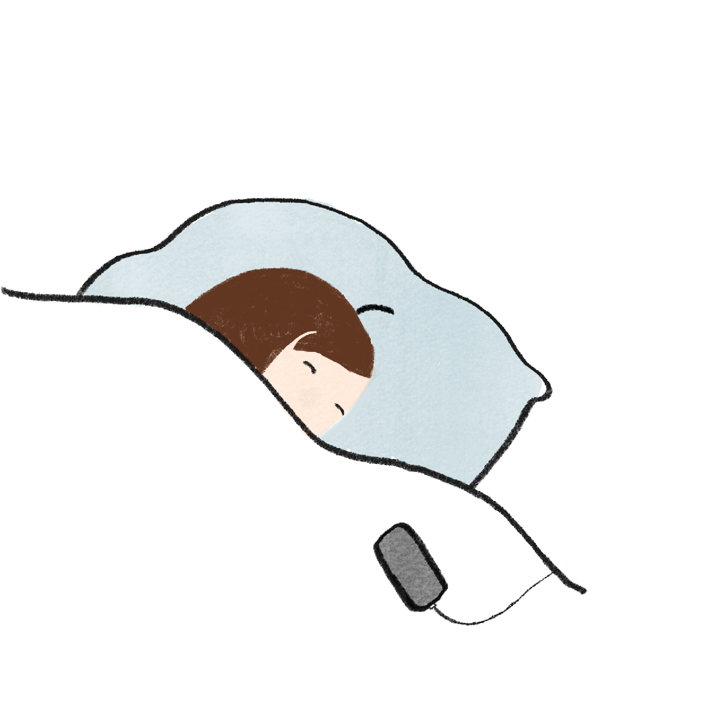
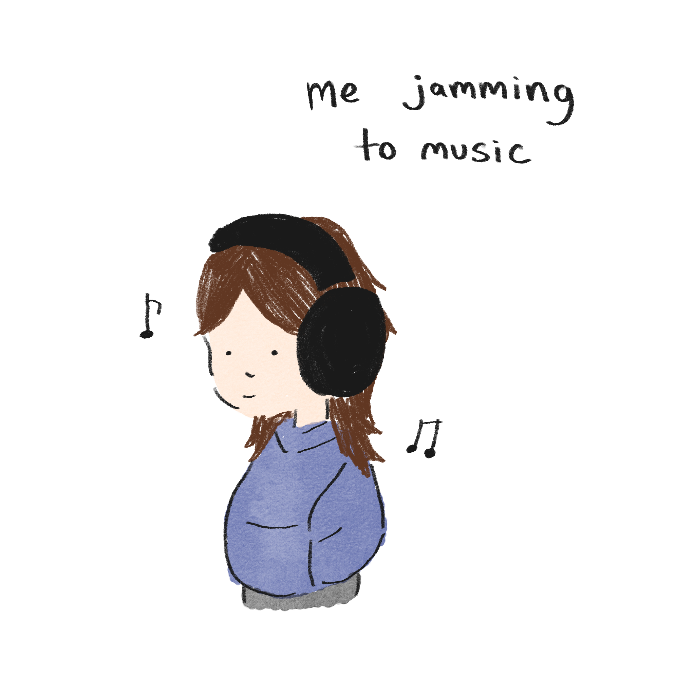
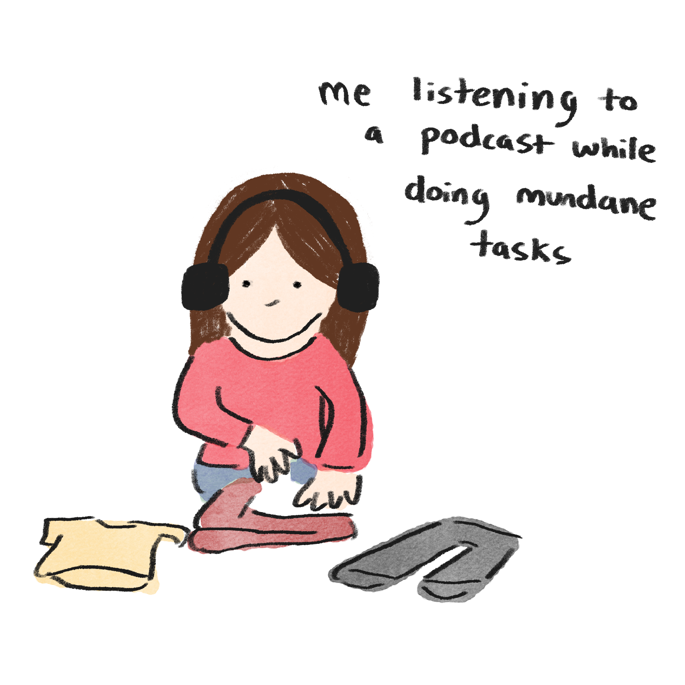
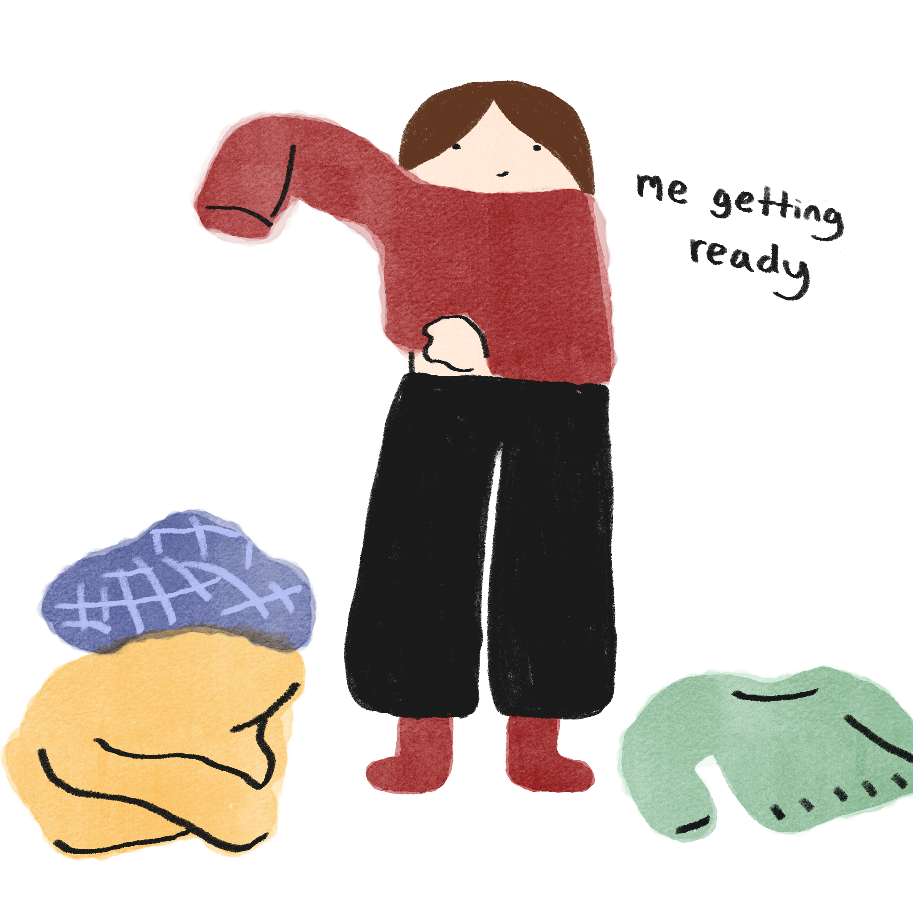
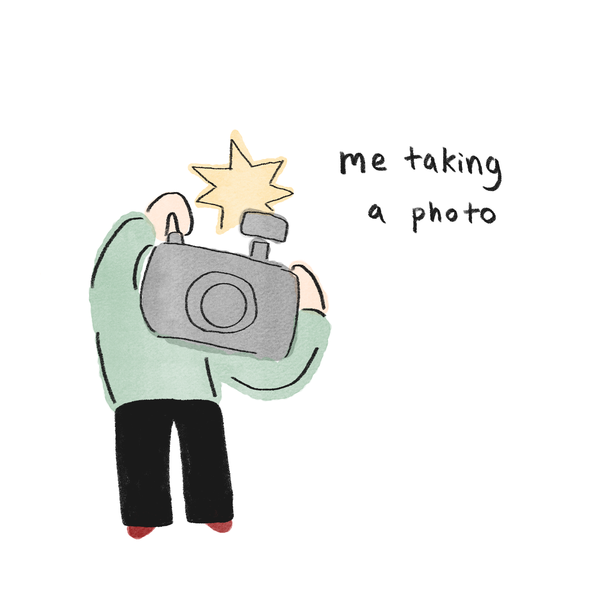
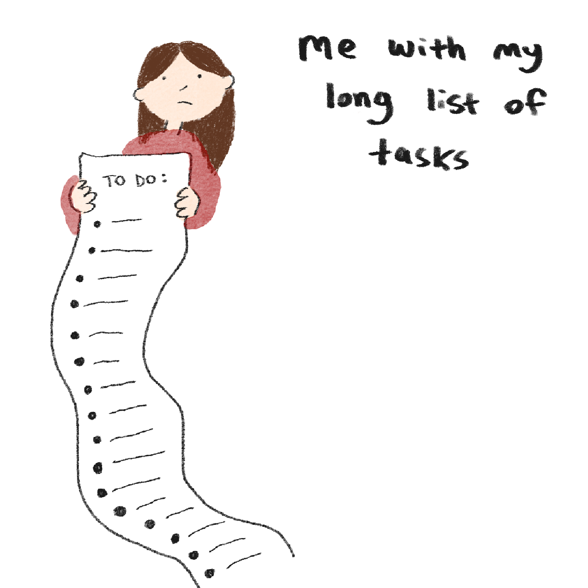
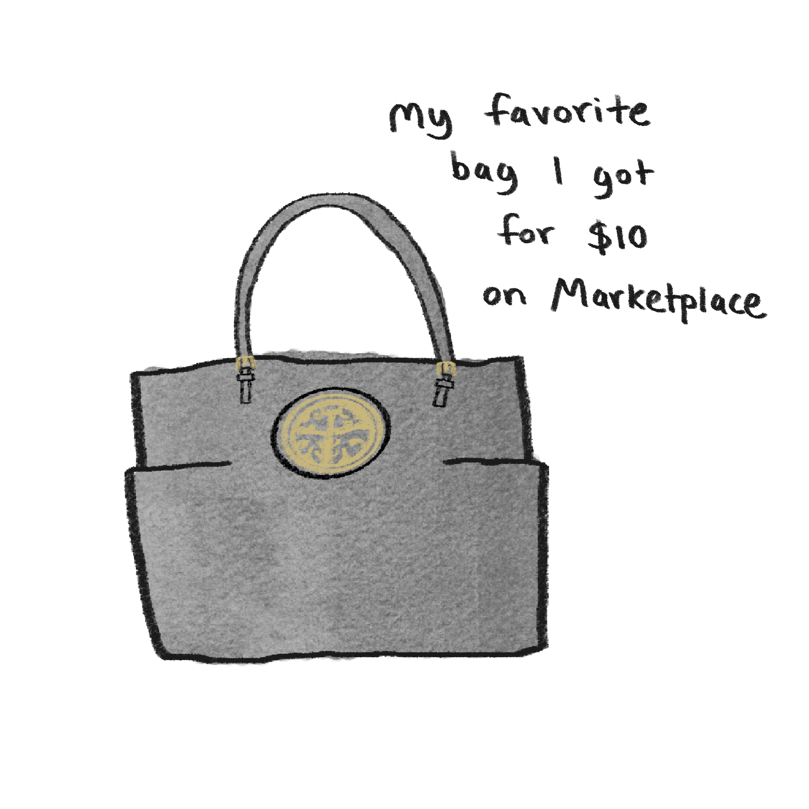
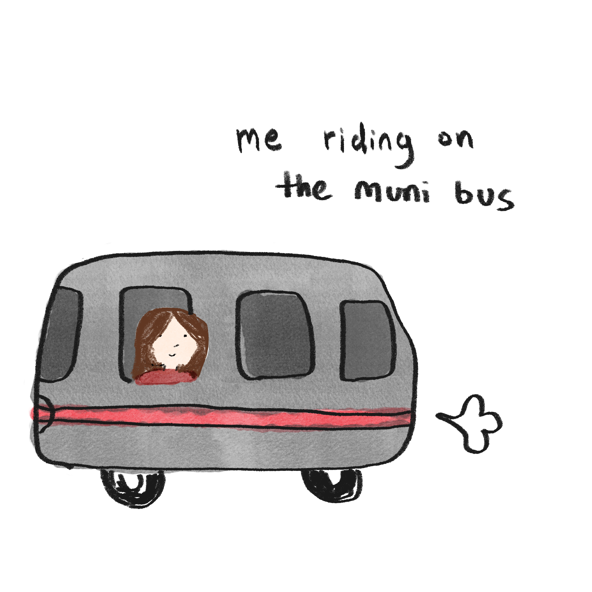
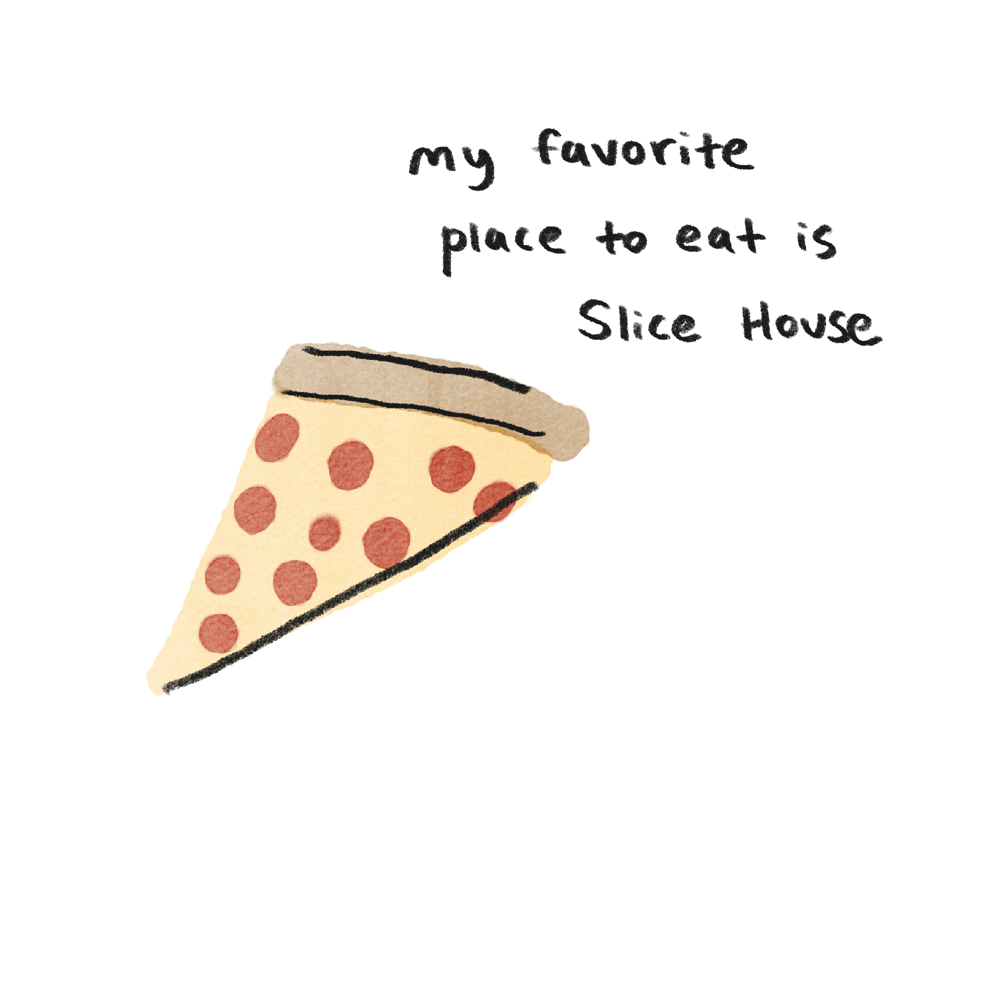
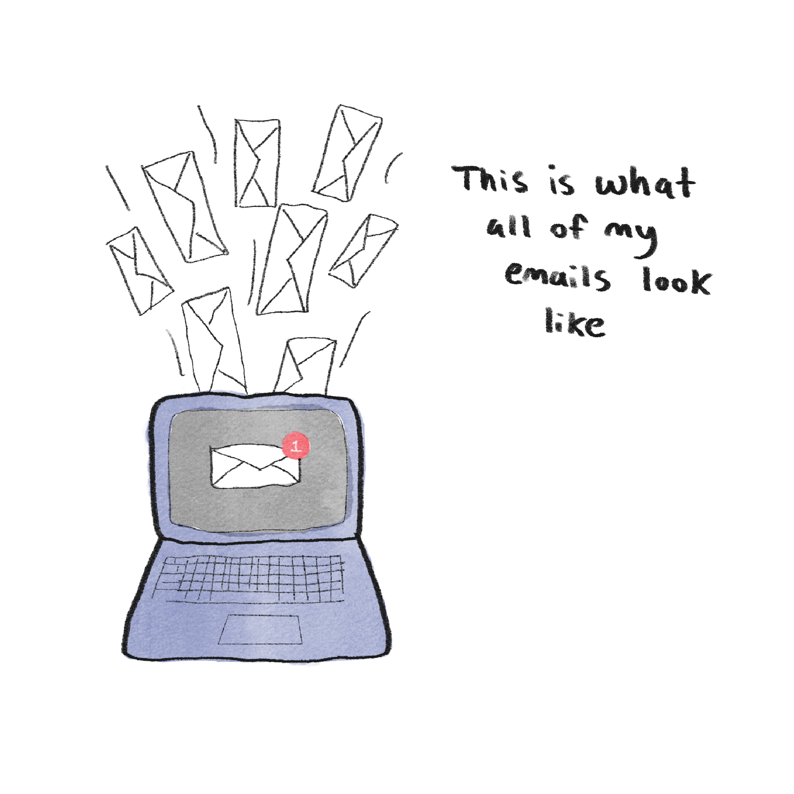

The Feed
Welcome to The Feed, a place that captures my digital life. 📸

Clock
I use this to get up in the morning. I have a few set earlier than I need to wake up because I like to click snooze over and over. After a few snoozes, I finally get up!

Apple Music
I loveeeee listening to music. I pretty much always have a pair of headphones on — whether it be my Sony WH-1000XM5s or my AirPods. My go-to lately has been shuffling my favorites or using my Winter 2025 playlist.

Apple Podcasts
I enjoy doing mundane tasks while listening to podcasts! In the morning I like to put one on while getting ready. I've also been loving the Ride podcast — Mary Beth Barone and Benito Skinner are soooo funny.
Photo Album
I like to scroll through this and go through my memories and reminisce. I'm constantly nostalgic, even for yesterday. Here are some hand-picked favorites from my phone.

Anytime I'm struggling creatively, I use Pinterest. I like using it for outfit ideas, new recipes, drawings, and more. It helps me discover things I love through an algorithm catered to my taste!

Camera
I love taking photos to capture moments or important info! Here I am taking a photo of my roommate's dog Appa. He is really cute.
I enjoy doom scrolling on Instagram — it's my main social media platform (I try to keep it to a minimum lol). I use it to send funny reels to friends and my boyfriend, and I love seeing what people are up to, even that one friend from middle school I still follow!

Notion
Notion is my favorite everyday app for organizing and managing tasks. I use it to plan out my week and manage my various responsibilities.

Facebook Marketplace
Facebook Marketplace is one of my favorite apps to scroll through for new finds. It's cost-effective, good for the environment, and full of cool, niche items people around the Bay Area are selling!

Transit
I've been using Transit a lot lately — especially since a classmate told me Transit Royale is free for students! It shows live bus updates including how packed the bus is, delays, cleanliness, and more.

Yelp
As someone trying to expand their food palate and explore a city known for incredible food, Yelp is my go-to. I like to eat with my eyes first before spending any money.

Gmail
I unfortunately use Gmail a lot. I constantly check my email to make sure I've answered direct messages and I'm up to date with important info! 🙈
Opal
As someone who is glued to their phone 24/7, I enjoy using Opal. It blocks my most distracting apps, and when I need access, I have to set a timer first. (I was on track to spend 33 years on my phone — how sad.)